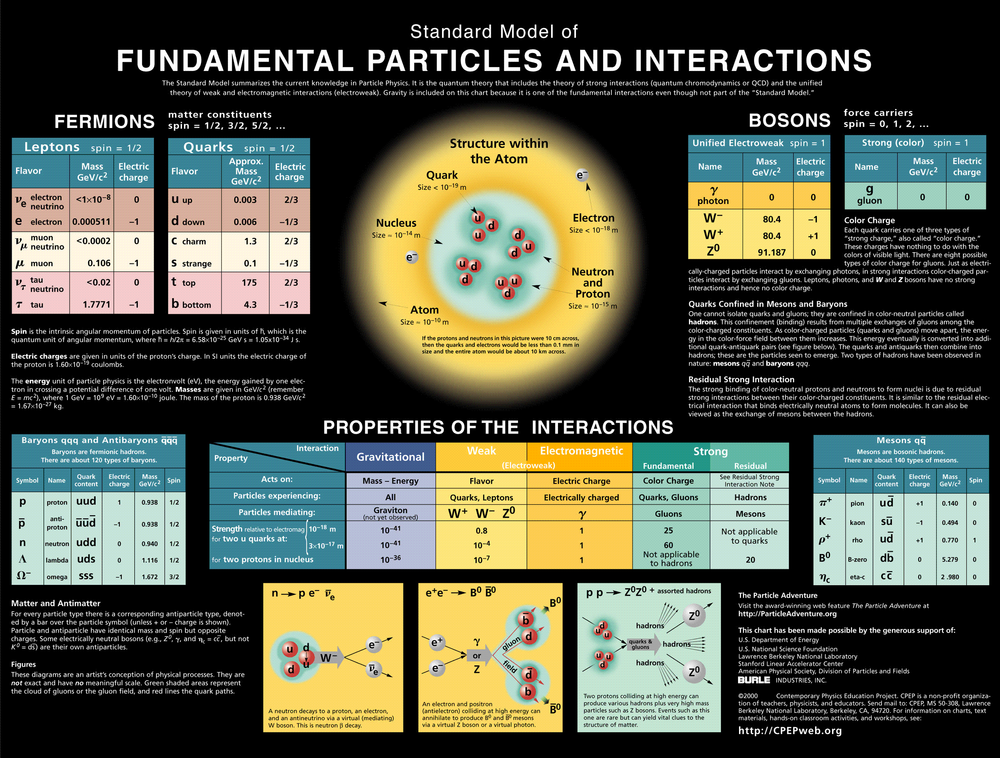

Home
Bio
Talks
Phys
Contact Me
Nature grows solutions to her problems
Knowledge knows no bounds
LHC
LHC Status Report 2015.09.23
LHC Collider Intro
Detector
ATLAS Glossary
ATLAS Status Report 2015.09.23
ATLAS Muon Week Detector 2015.10.12
ATLAS Muon Week Software 2015.10.12
Performance
2015 JES JER JM
Software
RootInstall
MacPorts
Fuse
sshfs
DQ2
ATLAS opendata
The Standard Model
b quark leptonic decay
Reconstruction
Kalman Filter
Hough Transform
Tools
Rucio
Random Topics
Lectures
Harvard
MIT
CERN Training
CERN Summer
Nice Talks
WZ at ATLAS, L.Jeanty
Higgs at ATLAS, T.Lazovich
DM at ATLAS, E.Tolley
Stop at ATLAS, S.Sun
Hbb at ATLAS, S.Chan

Me@LinkedIn